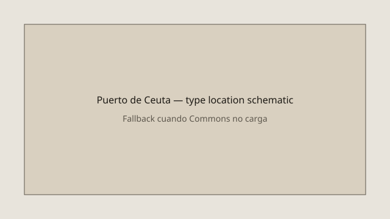

Ceuta · migración · 18 de septiembre de 2026
Las autoridades inician el traslado de migrantes desde las playas de Benítez y el Trampolín al campamento temporal del puerto de Ceuta.

Lo que coinciden las redacciones
El 18 de septiembre de 2026, las fuerzas de seguridad iniciaron a primera hora de la mañana el traslado de migrantes que permanecían en los asentamientos de las playas de Benítez y el Trampolín hacia el campamento temporal habilitado en la explanada del Muelle de Poniente del puerto de Ceuta. El recurso tiene una capacidad aproximada de 1.700 plazas. El operativo comenzó después de que la Audiencia Nacional rechazara el día anterior la medida cautelarísima solicitada por el Sindicato Unificado de Policía (SUP) para impedir la puesta en marcha de las instalaciones.
Según fuentes oficiales y policiales citadas por múltiples medios, se trasladaron en torno a 1.600–1.700 personas. El número de migrantes que permanecían en las playas se estimaba entre 3.000 y 5.000, por lo que varios miles quedaron fuera del campamento y regresaron a las playas o a zonas aledañas. El dispositivo policial incluyó agentes de las Unidades de Intervención Policial (UIP) y del Grupo de Reserva y Seguridad (GRS). Hubo momentos de tensión, avalanchas y disparos al aire para controlar el avance de grupos que intentaban acceder a las plazas disponibles.
El traslado se organizó en grupos sucesivos desde las playas hacia el puerto, a lo largo de un recorrido de poco más de un kilómetro. Las instalaciones del puerto se completaron en capacidad durante la jornada. El Gobierno central indicó que se seguirán abriendo espacios adicionales. Los menores no acompañados corresponden, según la distribución competencial, a la ciudad autónoma de Ceuta; en el momento del operativo no había plazas suficientes en centros específicos para todos ellos.
Lo que es solo una cita o un marco interpretativo
Las declaraciones de agentes policiales que denuncian un “despliegue ridículo” o que afirman haber sido solo 70 efectivos frente a miles de personas son testimonios de participantes. Las cifras oficiales del Ministerio del Interior hablan de unos 170 agentes de la UIP desplegados, más efectivos de otras unidades. La discrepancia entre las cifras oficiales y las de los sindicatos es un hecho de la cobertura, no una resolución judicial o administrativa.
Las afirmaciones de líderes políticos que califican el operativo de “éxito” o de “fracaso” y que vinculan la situación a la “integridad territorial” o a la “incompetencia del Gobierno” son valoraciones partidistas. El auto de la Audiencia Nacional que permitió el uso del suelo portuario es un acto judicial verificable; las valoraciones políticas sobre su oportunidad o sobre la gestión previa de la crisis migratoria no lo son.
Mecanismo e historia que el lector necesita
La entrada masiva de migrantes en Ceuta se registró a finales de julio de 2026. Desde entonces, miles de personas permanecieron en asentamientos improvisados en las playas de Benítez y el Trampolín. La capacidad de acogida de la ciudad autónoma era limitada; el Gobierno central autorizó la ocupación temporal de unos 16.000 metros cuadrados de suelo portuario para instalar un campamento de tiendas y servicios básicos. El Sindicato Unificado de Policía impugnó esa autorización y solicitó la suspensión cautelarísima; la Audiencia Nacional la denegó el 17 de septiembre, lo que permitió el inicio del traslado al día siguiente.
Ceuta es una ciudad autónoma española situada en el norte de África, con frontera terrestre con Marruecos. Las competencias en materia de extranjería y control de fronteras corresponden al Estado, mientras que la atención a menores no acompañados es competencia de la ciudad autónoma. La crisis de julio de 2026 superó con creces las plazas disponibles y generó tensiones logísticas, sanitarias y de orden público que se prolongaron durante semanas.
El campamento del puerto se sitúa en la explanada del Muelle de Poniente. Su capacidad de 1.700 plazas es inferior al número estimado de personas en las playas. Por tanto, el operativo de un solo día no podía realojar a todos. Las autoridades anunciaron que se abrirían espacios adicionales. El presidente de la Autoridad Portuaria de Ceuta declaró públicamente que no había sido informado con antelación del inicio del traslado, lo que añade un elemento de descoordinación administrativa a la cobertura.
Los momentos de tensión —avalanchas, intentos de saltarse el cordón policial, disparos al aire— son hechos reportados por testigos y medios presentes en el lugar. No se ha informado de heridos graves ni de detenciones masivas en el marco del traslado propiamente dicho. El orden se restableció de forma progresiva a medida que se llenaban las plazas y el resto de personas regresaba a las playas.
Lo que la historia no es
El traslado del 18 de septiembre no resuelve la crisis migratoria de Ceuta. Es una operación logística de realojo parcial de personas que llevaban semanas en condiciones precarias. No es una expulsión colectiva ni una decisión definitiva sobre el estatus de los migrantes. Tampoco es una prueba de que la capacidad de acogida de la ciudad o del Estado haya alcanzado un nivel estable. Las cifras de ocupantes del campamento y de personas que permanecen fuera seguirán siendo objeto de actualizaciones oficiales y de reportes periodísticos en los días siguientes.
Las valoraciones políticas que presentan el operativo como la solución o como la demostración del fracaso de una política concreta exceden los hechos verificables del día. El auto judicial que autorizó el uso del suelo portuario, el número aproximado de personas trasladadas y la capacidad del recurso son los datos ancla. El resto es contexto, testimonio o marco interpretativo.

Artículos fuente y puntuaciones
Imágenes: Wikimedia Commons fortificaciones de Ceuta (CC BY-SA 4.0) vía Special:FilePath. La leyenda indica que es fotografía de tipo y ubicación, no del operativo. SVG local como segunda imagen y reserva onerror. Sin atributo crossorigin.